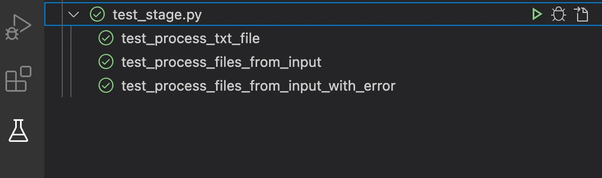
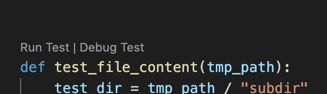

Setup the Dev Environment¶
Setup a virtual environment for python¶
First install virtualenv:
I follow the routes in the flask tutorial https://www.tutorialspoint.com/flask/flask_environment.htm
pip install virtualenv
No go to your project folder and type in
virtualenv venv
This will create a venv folder. Now type in:
source venv/bin/activate
You should now see venv in front of your cli prompt.
If you want to exit from the virtual environment then
type deactivate at the prompt.
Create a separate virtual environment for windows¶
If you want to use a virtual environment for windows then you can create a separate virtual environment for windows.
Use the command pip install virtualenv.
Now go to your project folder and type in, but
do not use venv but a different fodername
for this separate virtual environment
(especially when working in a dropbox folder).
virtualenv venv_win
This will create a virtual environment that you can use on your windows system. Before you are able to activate the environment you might have to change the policy settings so that you can start the skripts.
Use the following command:
Set-ExecutionPolicy -Scope CurrentUser -ExecutionPolicy RemoteSigned
Use Get-ExecutionPolicy to check the policy settings.
You have to activate the virtual environment by typing
in venv_win/Scripts/activate.ps1. You should now see the modified prompt.
psioniq Extension¶
Load the psioniq Extension for VSCode and add the following
configuration. To the settings.json in .vscode folder.
{
"psi-header.config": {
"license": "MIT",
"author": "Dr. Rupert Rebentisch"
},
"psi-header.templates": [
{"language": "*",
"template": [
"<<filename>>",
"Copyright (c) <<year>> <<author>>",
"Licensed under the MIT license"
],
"changeLogCaption": "HISTORY:"
}
],
"psi-header.lang-config": [
{"language": "python",
"begin": "",
"prefix": "# ",
"end": ""
}
]
}
Enable the Debugger¶
In VS Code there are two debuggers. There is the pdb command line debugger which is accessible via the terminal and the VS-Code own debugger that is integrated in the environment.
You have a special view for running tests and debugging them.
You also can run and start individual tests from the source file.
For this to work the setting of the debugger and the test engine have to be in sync.
Start the detection of tests with
Python: Discover Tests from the command palette.
Specify tests as the test directory.
For more information look at the VSCode Documentation
Install the module locally¶
Go to the project folder where you find the setup.py file.
Activate the virtual environment. To install the module locally type in:
pip install --editable .
With the --editable flag or -e flag
the module will be installed in the virtual environment.
You can uninstall the module with:
pip uninstall -y tools4zettelkasten
You should now be able to start the module
with tools4zettelkasten.